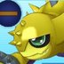
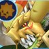

- 세대
- 완전체
- 종족
 바이러스
바이러스- 속성
 어둠
어둠- 소비 메모리
- 14
- 장비 슬롯
- 3
스테이터스 (Lv.99)
HP182039위/78
SP11875위/78
ATK2671위/78
INT10873위/78
DEF21213위/78
SPD16839위/78
막대 길이는 등록된 디지몬 중 최고값 대비 비율이에요. 순위는 스테이터스가 등록된 디지몬끼리 비교해요.
필살기 1
오블리비언 버드  불 SP 15
불 SP 15
디지몬 속성(어둠)과 다름
적 1체에 불속성 위력 110의 물리공격. 50%의 확률로 대상의 방어력을 10% 내린다.
SS(서포트스킬)
용의 분노
공격력이 15% 상승한다.
계승기 (레벨업 습득) 4
이 디지몬이 레벨업으로 배우는 스킬이에요. 배운 스킬은 진화·퇴화해도 계속 쓸 수 있어요.
| 습득 Lv | 스킬 | 속성 | SP |
|---|---|---|---|
| 15 | 액셀 부스터 다음 턴, 아군이 주는 대미지가 2배가 된다. | 6 | |
| 25 | 디스트럭션 적 1체에 어둠속성 위력 40의 물리공격. 대상을 10%의 확률로 즉사시킨다. | 10 | |
| 35 | 디스트로이 캐논 III 적 1체에 어둠속성 위력 105의 물리공격. 명중률 95%. | 9 | |
| 45 | 코멧 해머 III 적 1체에 땅속성 위력 105의 물리공격. 명중률 95%. | 9 |
이 디지몬이 강한 상대
상대 종족(세로)과 속성(가로)별로 이 디지몬의 공격 필살기 중 가장 높은 배율이에요. 칸에 마우스를 올리면 계산 근거가 보여요.
×3 이상×2 이상보통×1 미만
| 상대 ↓ / → | |||||||||
|---|---|---|---|---|---|---|---|---|---|
| 백신 | ×0.50 | ×0.50 | ×0.75 | ×0.50 | ×0.50 | ×0.50 | ×0.50 | ×0.50 | ×0.50 |
| 데이터 | ×2.00 | ×2.00 | ×3.00 | ×2.00 | ×2.00 | ×2.00 | ×2.00 | ×2.00 | ×2.00 |
| 바이러스 | ×1.00 | ×1.00 | ×1.50 | ×1.00 | ×1.00 | ×1.00 | ×1.00 | ×1.00 | ×1.00 |
| 프리 | ×1.00 | ×1.00 | ×1.50 | ×1.00 | ×1.00 | ×1.00 | ×1.00 | ×1.00 | ×1.00 |
등록된 디지몬 중 ×2 이상으로 공격할 수 있는 상대 80마리
완전체 같은 세대 23 · 다른 세대 상대는 도감에서 볼 수 있어요.
라일라몬×3.00릴리몬×3.00나이트몬×2.00데드메라몬×2.00도사몬×2.00돌그레몬×2.00디지타몬×2.00마하가오가몬×2.00메가시드라몬×2.00메탈콩알몬×2.00볼케몬×2.00세이버헉몬×2.00슈퍼스타몬×2.00안티라몬×2.00운석몬×2.00캐치콩알몬×2.00콩알몬×2.00크레세몬×2.00트리케라몬×2.00팬더몬×2.00펌프몬×2.00피콜몬×2.00히포그리포몬×2.00
진화 전 디지몬 (퇴화 가능) 4

황금아르마몬
- 이 디지몬을 발견한 적이 있다.
그레이몬
- 이 디지몬을 발견한 적이 있다.
지오그레이몬
- 이 디지몬을 발견한 적이 있다.
모노크로몬
- 이 디지몬을 발견한 적이 있다.
진화 가능 디지몬 3
마왕몬
- 레벨 60 이상
- 최대 HP가 1600 필요
- 공격력이 230 필요
- 지력이 160 필요
- 재능이 80 필요
샤인그레이몬
- 레벨 55 이상
- 공격력이 140 필요
- 민첩이 130 필요
- 재능이 20 필요
- 우정이 80% 필요

타이타몬
- 레벨 55 이상
- 최대 HP가 1400 필요
- 공격력이 150 필요
- 지력이 120 필요
- 재능이 20 필요
진화 트리 · 스컬그레이몬까지 오는 길 + 다음 진화
왼쪽부터 진화 순서예요. 스컬그레이몬 오른쪽(점선 칸)은 바로 다음 진화 1단계예요. 그 뒤가 궁금하면 그 디지몬을 눌러 따라가 보세요. 선은 출발하는 디지몬의 색을 따라가요. 디지몬을 한 번 누르면 거기서 스컬그레이몬까지 가는 경로만 남고, 한 번 더 누르면 그 디지몬 페이지로 이동해요. 회색 칸은 아직 정보가 없는 디지몬이에요.
🧭 도감에서 스컬그레이몬 진화 루트 찾기